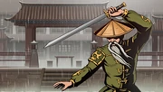
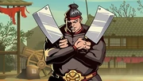
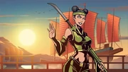
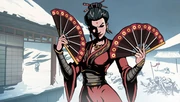
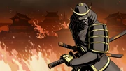

Lynx is the very first demon encountered in Shadow Fight 2. Lynx is the leader of a group of assassins known as "The Order". When he meets the player, he dismisses the player as a pathetic fighter, instead sending Shin to take care of the player. Lynx has five bodyguards who, once defeated, clear the way for the player to battle Lynx. Lynx's weapons are his claws - which have a moderate range, high damage and outclass most of the weapons in the first province. Lynx is also the first enemy to use ranged weapons. His special ability is that he can throw down a smoke bomb and become invisible. When Lynx is defeated, he hands over the Blue Seal. Beating him will allow the player to buy ranged weapons in the shop. If the player defeats Lynx in Eclipse mode, they will get his claws as a reward.
Hermit is the second demon encountered in Shadow Fight 2. He has five disciples which take the roles of bodyguards. All of them have names based on martial art styles. Hermit is famous for his mysterious power, which is revealed by Sly to be Magic. Hermit has destroyed all other academies in the town so he can build his own school. It is revealed that Hermit's disciples resent him and only learn from him in an attempt to discover his secret and use it for their own benefits. Dragon, one of Hermit's disciple, reveals that there is a competition, full of aspiring warriors that are trying to get a place at Hermit's academy. The winner will get to know Hermit's secret power. Hermit wields a pair of one-handed swords as weapon and is the first enemy to use magic. He changes his ranged weapon to a new one each round the player defeats him. Hermit can use his magic quite often because of the fast recharge of his magic. First, he uses Lightning Arrow, then switches to Water Ball after the player defeats him twice. Hermit's special ability is that he can enter a transcendent state that allows him to summon lightning strikes at will. However, Hermit is unable to move while casting this ability, so Shadow can attack him at will. Defeating Hermit, he will reward Shadow with the Green Seal and his secret power, Magic. If the player defeats Hermit once more in Eclipse mode, they will get his weapon as a reward.
Butcher is the third demon encountered in Shadow Fight 2. As with Lynx and Hermit, he has five bodyguards. His first bodyguard is Bird, who attempts to ambush the three protagonists (Shadow, Sensei and May). She leads them to a secluded part of town saying that it will take their breath away, once and for all. Upon escorting them to her destination, she attacks, but Shadow manages to defeat her. Bird's defeat brings forth the rest of Butcher's Gang, directing the protagonists to Butcher himself. Butcher is a bandit who raises children from a young age, training them to be violent and aggressive. Butcher was introduced by name in Act II to the protagonist by Hermit, who says that Butcher has been harassing Hermit for some time now because he seeks Hermit's magic. Butcher wields a pair of meat cleavers, which cause bleeding effects on the player when he gets hit. His special ability is that he can stomp the ground, which causes a small earthquake. If Shadow is caught on the ground when he lands, he will lose a portion of his health as well as fall. Defeating him will reward players with the Red Seal. If defeated once more during eclipse, players will get his weapon as a reward.
Wasp is the fourth demon encountered in Shadow Fight 2. She is the daughter of The Pirate King. With her father missing, Wasp became the new Pirate King. As with the other demons, she has five bodyguards who have their names themed on the sea. However, the first 3 "bodyguards" are members of "New Blood", a rebel group comprised of the pirate crews that do not trust Wasp. The last 2 "bodyguards" are Wasp's loyal men. Wasp wields a green naginata. Her special ability is that she can jump off the edges of the battlefield and swoop across the screen, damaging the player. However, the attack can be dodged by rolling or a well-timed duck. After defeated, Wasp reveals that she indeed killed the Pirate King after being manipulated by Widow. The reward for beating her is the Purple Seal. If defeated once more in eclipse, players will receive her weapon as a reward.
Widow is the fifth demon encountered in Shadow Fight 2. As with the other demons, she has five bodyguards named after animals particularly of cold regions, which serves as a metaphor of her cold-heartedness and indifference towards her admirers, though she does seem to hint some genuine feelings for Shadow, as he was unaffected by her charm. Her "bodyguards" are people who were mesmerized by her magic and beauty, competing for her attention, with the exception of Puma, Widow's only female bodyguard who genuinely serves Widow to help her achieve her ambitions. Widow wields a pair of fans with a leeching effect. Her special ability is that she can teleport behind Shadow and backstab him, doing a noticeable amount of damage. This can be avoided by doing a very well-timed roll, a backwards kick as soon as she teleports, or simply intercepting her before she finished the teleport. Widow hands over the Orange Seal after she is defeated. If defeated once more in eclipse, players will get her weapon as a reward.
Shogun is the sixth demon encountered in Shadow Fight 2. As with the other demons, he has five bodyguards. He is the ruler of Ivory City, a burning city near the Gates of Shadows. Shogun and his bodyguards seem to believe that Shadow is the former Prince of Ivory City, which has been deceased. A bodyguard mistakes Shadow as The Prince, reporting it to the person who is one rank higher in the hierarchy, but they do not believe the lower officer and penalize them until they themselves get beaten and so on. All of Shogun's bodyguards have certain army ranks as their names. Shogun was once a servant of the Prince, a man of royal birth. Seeing the incompetence of said Prince, and how his nation was falling to ruins because of this man, Shogun masterminded the assassination of the Prince, without the awareness of his men, and seized power for himself. While the nation was certainly stronger and more powerful than when previously ruled by the Prince, Shogun's reign showed to be tyrannical and somewhat despotic, as hinted by Shogun's bodyguards. Shogun wields a pair of a katana and a wakizashi blade - the pair of blades is called Daisho. His special ability is that he can call his bodyguards, who will come from either side of the screen at random intervals, one at a time, and attempt to strike Shadow once before "flying" upwards. The summoned bodyguards cannot be attacked. Their attacks cannot be blocked, but can be avoided. Defeating him will reward the player with the last seal, Jade Seal, as well as unlocks Gates of Shadows. If the player defeats him once more during eclipse, they will get his weapon as a reward.